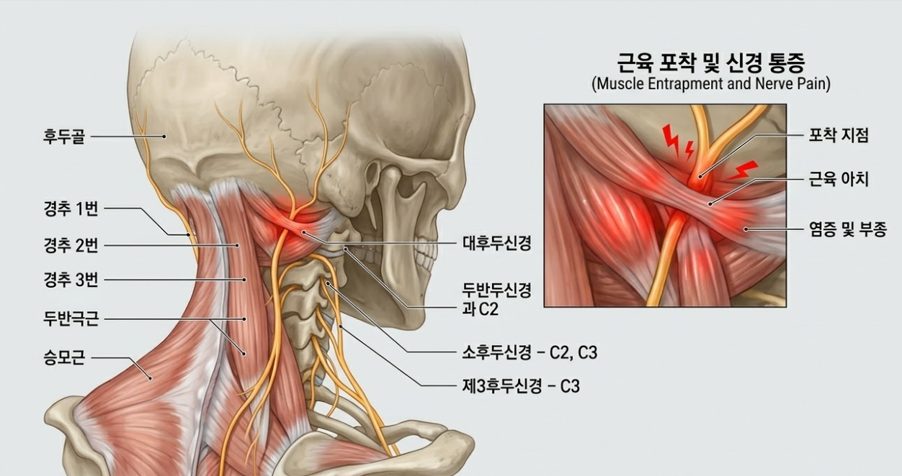

"지긋지긋한 두통, 원인은 머리가 아니라 '목'에 있습니다" 경추성 두통 탈출법

💡 바디올 30초 핵심 요약
1. 두통약을 먹어도 낫지 않는 만성 두통의 원인은 상부 경추의 부정렬 때문일 확률이 높습니다.
2. 일자목·거북목은 뒤통수 아래 신경을 눌러 눈 뻐근함, 편두통, 어지럼증을 유발합니다.
3. 바디올은 SART 교정으로 C자 곡선을 복원하고 도침으로 압박된 신경을 해방합니다.
1. 두통약만으로 해결되지 않는 증상들
머리 자체의 문제가 아니라 목뼈의 정렬이 무너져 발생하는 '경추성 두통'은 다음과 같은 특징을 보입니다.
- 뒷목 뒷덜미가 뻣뻣해지면서 정수리나 관자놀이 쪽으로 통증이 타고 올라온다.
- 주로 한쪽 머리가 아프며, 심할 때는 안구 통증이나 침침함이 동반된다.
- 뒷머리와 목이 만나는 움푹 들어간 지점을 누르면 두통이 재현된다.
- 컴퓨터나 스마트폰을 오래 본 뒤에 두통이 더 심해진다.
2. 메커니즘 분석: 거북목이 만드는 두통
정상적인 목의 C자 곡선이 사라지면 머리의 무게가 상부 경추에 집중됩니다. 이때 뒤통수 아래의 작은 근육들이 신경을 꽉 누르게 됩니다.

• 후두신경 압박: 굳어진 근육이 머리로 올라가는 후두신경을 압박하여 찌릿하거나 지끈거리는 통증을 만듭니다.
• 혈류 장애: 목 근육의 과긴장은 뇌로 가는 혈액 순환을 방해하여 만성 피로와 어지럼증의 원인이 됩니다.
3. 바디올의 통합 치료 솔루션 (Total Care)
바디올한의원은 머리가 아닌, 신경을 누르고 있는 '구조'를 바로잡아 두통의 뿌리를 뽑습니다.
• 공간척추교정(SART) / 추나요법: 일자목을 다시 C자형 정상 곡선으로 유도하여 머리의 하중을 분산시키고 경추 공간을 확보합니다.
• 도침치료(유착박리술): 신경을 누르는 가장 깊은 곳의 단단한 유착 부위를 미세 분리하여 즉각적인 두통 완화 효과를 냅니다.
• 종합 치료 솔루션: 침 치료와 고농도 봉약침으로 경추 신경의 염증을 제어하며, 부항 치료로 근육 속 독소를 배출합니다.
• 현대 물리치료: ICT와 TENS 기기를 활용해 승모근부터 목덜미까지의 깊은 근육 긴장을 해소합니다.

4. 바디올 권장: 경추 위생 스트레칭
잘못된 자세로 좁아진 목 앞쪽 공간을 열어주고 경추 곡선을 살려주는 가장 안전한 스트레칭입니다.
- 경추 위생 스트레칭: 양손을 깍지 끼어 뒷목(머리와 목이 만나는 지점)에 대고, 가슴을 활짝 펴면서 고개를 천천히 뒤로 젖혀 5~10초간 유지합니다.
- 주의사항: 턱을 억지로 몸쪽으로 당기는 자세는 오히려 목의 곡선을 해칠 수 있으니 피해야 합니다. 뒤로 젖힐 때 시원한 느낌이 드는 범위까지만 진행하세요.